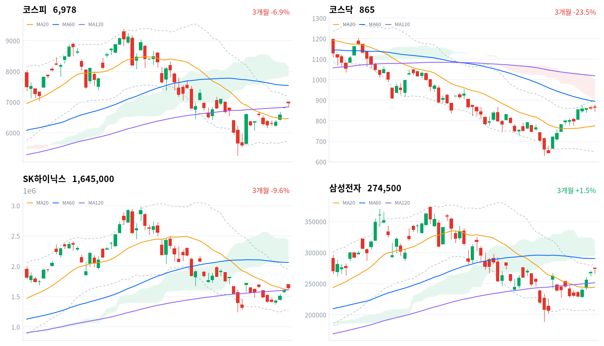
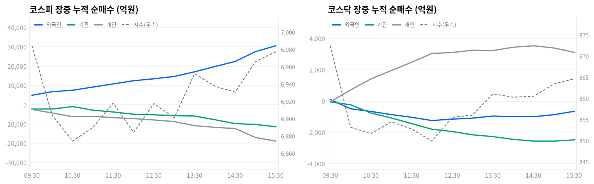

동인 코스피는 전일 종가(6,813.34포인트) 대비 182.33포인트(+2.68%) 급등한 6,995.67포인트에서 개장해 곧바로 7,010.86포인트(+2.90%)까지 치솟으며 장중 한때 '7000피'를 터치했으나, 이후 매물 출회에 오전 중 6,848.43포인트(일중 저가)까지 밀렸다가 오후 내내 등락을 반복한 끝에 6,977.94포인트(+2.42%)로 마감했다 — 5거래일 연속 상승이지만 종가 기준 7000선 안착에는 실패했다. 코스닥은 868.07포인트에서 출발해 장 초반 879.29포인트까지 오른 뒤 845.41포인트까지 되밀렸다가 864.65포인트(+0.38%)로 강보합 마감해 코스피 대비 상대적으로 부진했다. 미국 7월 CPI(8월12일 발표)가 전년比 3.4%로 예상에 부합해 인플레이션 재가속 우려가 완화되고 9월 FOMC 동결 기대가 커진 가운데, 현대모비스의 보스턴다이내믹스 '아틀라스'향 액추에이터 공급 계약 공식화가 자동차 그룹주 급등(현대차 +8.24%, 현대모비스 +7.05%)을 이끌었고 앤스로픽의 10월 IPO 기업가치 2조달러 이상 전망(FT 보도)에 SK텔레콤 지분가치 재평가 기대가 겹쳤다.
크로스에셋·수급 정합성 코스피에서 외국인이 3조387억원을 순매수(당일 잠정)한 반면 개인(-1조9820억원)·기관(-1조298억원)은 동반 순매도해 '외국인 vs 개인·기관' 구도로 지수를 밀어올렸다. 다만 코스피 프로그램 매매는 비차익 +1,604억원·차익 -1,135억원이 상쇄돼 전체 +469억원 순매수에 그쳐, 외국인의 3조원대 매수 대부분이 프로그램이 아닌 일반 매매를 통해 유입됐다는 뜻이다. 업종별로는 자동차가 +6.2%(12종목 중 10종목 상승, breadth 0.833)로 폭넓게 오른 반면 무선통신서비스는 +8.49%(4종목 중 2종목 상승, breadth 0.5)로 SK텔레콤 단독 급등에 가까웠고, 반도체와반도체장비는 +2.77%(171종목 중 86종목 상승, breadth 0.503)에 그쳐 거래대금 1·2위(SK하이닉스 7.12조원·삼성전자 5.87조원)의 압도적 매수세와 달리 업종 전체로는 좁은 상승에 머물렀다 — 반도체 자금이 대형주에 쏠렸다는 뜻이다.
다음 촉매·확인 트리거 기술적으로 코스피는 20일선(6,504.36포인트)을 7.28% 웃돌지만 일목균형표 구름대(7,772.73~8,329.31포인트) 아래에 머물러 있어, 오늘의 반등이 추세 전환으로 이어지려면 20일 스윙 고점(7,424.18포인트) 돌파 여부를 먼저 지켜봐야 한다. 장중 수급에서는 외국인 누적 순매수가 전환 없이 09시01분 +1,172억원에서 15시21분 +3조549억원까지 종일 늘어난 반면 개인·기관은 각각 전환 없이 매도 규모를 키웠는데, 정규장 마지막 관측치(외국인 +3조549억원)와 확정치(+3조387억원)의 격차가 크지 않아 오늘은 장중 스냅샷과 확정치의 괴리가 상대적으로 작았다. 다음 확인 지점은 8월27일 한은 금통위, 정기국회(통상 9~12월) 세제개편안·상법개정 자사주 과세 규정 심의, 그리고 앤스로픽 10월 IPO 밸류에이션 확정 여부다.
| 지수 | 종가 | 등락률 | 일중 고가 | 일중 저가 |
|---|---|---|---|---|
| 코스피 | 6,977.94 | +2.42% | 7,010.86 | 6,848.43 |
| 코스닥 | 864.65 | +0.38% | 879.29 | 845.41 |
코스피는 전일 종가(6,813.34포인트) 대비 182.33포인트(+2.68%) 급등한 6,995.67포인트에서 개장해 곧바로 7,010.86포인트(+2.90%)까지 치솟으며 장중 한때 '7000피'를 터치했다(일중 고가 7,010.86포인트는 개장 직후 이 구간에서 형성된 것으로 보이며, 09시 표본은 이미 6,982.82포인트로 상승폭 일부를 반납한 상태였다). 이후 매물이 출회되며 10시 6,903.77포인트, 10시30분 6,874.06포인트까지 밀렸고(일중 저가 6,848.43포인트는 이 무렵 근접 형성된 것으로 추정) 11시 6,889.82포인트로 낙폭을 일부 되돌렸다.
오후에도 11시30분 6,918.11포인트, 12시 6,884.08포인트, 13시30분 6,952.00포인트로 등락을 거듭하다 14시 6,937.48포인트·14시30분 6,930.64포인트로 잠시 눌린 뒤 15시 6,965.97포인트, 15시30분 6,977.34포인트를 거쳐 6,977.94포인트(+2.42%)로 마감했다 — 5거래일 연속 상승했지만 장중 터치했던 7000선 안착에는 끝내 실패했다.
코스닥은 868.07포인트에서 출발해 장 초반 879.29포인트까지 올랐고(정규 30분 표본에는 나타나지 않지만 09시30분 표본 872.45포인트 직전 구간에서 형성된 것으로 추정) 이후 매물에 10시 853.16포인트, 10시30분 851.64포인트로 밀렸다가 낮 12시 849.90포인트까지 추가 하락했다(일중 저가 845.41포인트는 이 구간에서 형성된 것으로 추정). 오후 들어 낙폭을 줄여 12시30분 855.53포인트, 13시30분 861.09포인트까지 반등했고 860포인트 안팎에서 등락하다 15시 863.40포인트, 15시30분 864.64포인트를 거쳐 864.65포인트(+0.38%)로 강보합 마감해 코스피 대비 상대적으로 부진했다.
오늘 랠리의 직접 배경은 간밤 미국 지표다. 미 노동부가 발표한 7월 CPI가 전년比 3.4% 상승해 시장 예상에 부합하면서 인플레이션 재가속 우려가 완화됐고 9월 FOMC 금리 동결 기대가 커지며 위험자산 선호 심리가 강화됐다(디지털데일리·파이낸셜뉴스·헤럴드경제 등 다수 매체 보도). 여기에 현대모비스의 보스턴다이내믹스 '아틀라스'향 액추에이터 공급 계약 공식화가 자동차 그룹주 급등을 촉발했고, 반도체 대형주 강세도 지속돼 지수 상승을 뒷받침했다(스카이데일리·오토일렉트로닉스 보도).

코스피 코스피는 6,977.94포인트로 마감해 20일선(6,504.36포인트)을 7.28%, 120일선(6,812.67포인트)을 2.43% 웃돌지만 60일선(7,576.53포인트)은 7.9% 밑돌아 이동평균이 혼조 배열을 이루고 있다. 일목균형표에서는 전환선(6,545.55)이 기준선(6,795.01) 아래에 있지만 가격 자체는 기준선을 웃돌고 있고, 구름대(7,772.73~8,329.31포인트) 아래에는 여전히 머물러 있어 추세 전환이 완성되지 않은 그림이다. 상승 시나리오는 20일 스윙 고점(7,424.18포인트) 돌파가 1차 트리거이며, 이를 넘어서면 구름대 하단(7,772.73포인트)이 다음 저항이다. 하락 시나리오는 120일선·기준선이 겹치는 6,795~6,813포인트 구간 이탈이 트리거로, 이 경우 20일선(6,504.36포인트)까지 되밀릴 수 있고 20일·60일 스윙 저점이 겹치는 5,262.77포인트가 최후 지지선이다. 볼린저밴드 %b는 0.778로 중심선(6,504.36포인트)과 상단(7,357.22포인트) 사이 상단권에 위치한다.
코스닥 코스닥은 864.65포인트로 마감해 20일선(778.90포인트)을 11.01% 웃돌지만 60일선(900.41포인트)·120일선(1,022.57포인트)은 각각 3.97%·15.44% 밑돌아 이동평균은 역배열을 유지하고 있다. 볼린저밴드 %b는 0.847로 상단(902.28포인트)에 근접해 단기 과열 신호가 뚜렷하다. 일목균형표에서는 전환선(813.74)이 기준선(755.14)을 웃돌아 단기 모멘텀은 우호적이지만 가격은 여전히 구름대(915.90~1,021.06포인트) 아래에 머물러 있다. 상승 시나리오는 20일 스윙 고점(879.29포인트, 오늘 기록한 일중 고가와 동일) 돌파가 1차 트리거이며, 이를 넘어서면 구름대 하단(915.90포인트)이 다음 저항이다. 하락 시나리오는 전환선(813.74)·기준선(755.14) 아래로 밀리는 것이 트리거로, 1차 지지는 20일선(778.90포인트)이고 이마저 무너지면 20일·60일 공통 스윙 저점(630.99포인트)이 최후 지지선이다.
SK하이닉스 SK하이닉스는 164만5000원으로 마감해 20일선(161만1550원)을 2.08%, 120일선(161만225원)을 2.16% 웃돌아 두 이동평균 근방에 위치하지만, 60일선(206만2216.67원)과는 20.23% 벌어져 있어 이동평균은 혼조 배열이다. 일목균형표에서는 전환선(153만7000원)이 기준선(177만5500원) 아래에 있고 가격도 구름대(208만5000~244만1750원) 아래에 머물러 있다. 상승 시나리오는 기준선(177만5500원) 회복이 1차 트리거이며, 이를 넘어서면 20일 스윙 고점(200만6000원)이 다음 목표다. 하락 시나리오는 20일선·120일선이 겹치는 161만~161만2000원대 이탈이 트리거로, 이 경우 볼린저 하단(127만5961.87원)과 근접한 20일·60일 공통 스윙 저점(124만6000원)이 최후 지지선이다. 볼린저 %b는 0.55로 중심선 부근에 위치한다.
삼성전자 삼성전자는 27만4500원으로 마감해 20일선(24만4475원)을 12.28%, 120일선(25만1625.42원)을 9.09% 웃돌지만 60일선(29만500원)은 5.51% 밑돌아 이동평균이 혼조 배열이다. 볼린저밴드 %b는 0.899로 상단(28만2138.61원)에 바짝 붙어 단기 과열 신호가 뚜렷하다. 일목균형표에서는 전환선(25만1500원)이 기준선(24만3600원)을 웃돌아 단기 모멘텀은 우호적이지만, 가격은 구름대(29만5000~31만9500원) 아래에 머물러 있다. 상승 시나리오는 20일 스윙 고점(27만6000원) 돌파가 1차 트리거이며, 이를 넘어서면 구름대 하단(29만5000원)이 다음 저항이고 60일 스윙 고점(37만4500원)이 궁극적 목표다. 하락 시나리오는 20일선(24만4475원) 이탈이 트리거로, 20일·60일 스윙 저점이 겹치는 18만9200원이 최후 지지선이다.
위 레벨은 kr_technical.json의 이동평균·볼린저밴드·일목균형표·스윙 고저를 기계적으로 계산한 것으로, 투자 권유가 아니다.
코스피 수급표를 보면 외국인이 3조387억원을 순매수(당일 잠정)한 반면 개인은 1조9820억원, 기관은 1조298억원을 순매도했다. 5거래일 연속 상승·미국 CPI 완화·자동차와 반도체 대형주 강세에 외국인이 화답했지만, 개인·기관은 최근 급등에 따른 차익실현 매물을 내놓은 모습이다.
| 코스피 (억원, 당일 잠정) | 개인 | 외국인 | 기관 |
|---|---|---|---|
| 2026-08-14 | -19,820 | +30,387 | -10,298 |
| 코스닥 (억원, 당일 잠정) | 개인 | 외국인 | 기관 |
|---|---|---|---|
| 2026-08-14 | +3,145 | -659 | -2,524 |
코스피에서는 외국인 매수가 지수 급등과 정합됐다 — 자동차가 +6.2%(12종목 중 10종목 상승, breadth 0.833)로 폭넓게 오른 것과 겹치는 대목이다. 코스닥은 반대로 개인이 매수 주체였고(+3,145억원) 외국인·기관은 각각 659억원·2,524억원 순매도로 대응해, 외국인 자금이 대형주 중심의 코스피에 쏠리고 코스닥은 상대적으로 소외된 구도가 이어졌다.

| 시각 | 코스피 (억원) | 코스닥 (억원) | ||||
|---|---|---|---|---|---|---|
| 개인 | 외국인 | 기관 | 개인 | 외국인 | 기관 | |
| 09:30 | -2,469 | 4,896 | -2,249 | -49 | 94 | -58 |
| 10:00 | -4,297 | 6,737 | -2,223 | 711 | -495 | -238 |
| 10:30 | -6,199 | 7,502 | -992 | 1,412 | -665 | -764 |
| 11:00 | -6,042 | 9,148 | -2,837 | 1,947 | -867 | -1,081 |
| 11:30 | -6,691 | 10,772 | -3,769 | 2,477 | -1,039 | -1,441 |
| 12:00 | -7,211 | 12,426 | -4,933 | 3,041 | -1,247 | -1,801 |
| 12:30 | -7,906 | 13,433 | -5,241 | 3,099 | -1,155 | -1,950 |
| 13:00 | -8,731 | 14,650 | -5,648 | 3,247 | -1,093 | -2,159 |
| 13:30 | -10,872 | 17,030 | -5,878 | 3,225 | -960 | -2,273 |
| 14:00 | -11,724 | 19,775 | -7,775 | 3,438 | -1,000 | -2,450 |
| 14:30 | -12,373 | 22,422 | -9,799 | 3,532 | -1,002 | -2,561 |
| 15:00 | -17,004 | 27,513 | -10,241 | 3,391 | -874 | -2,562 |
| 15:30 | -18,878 | 30,549 | -11,413 | 3,108 | -656 | -2,482 |
코스피에서는 개인·외국인·기관 세 주체 모두 하루 종일 방향 전환 없이(turns 비어있음) 한 방향으로만 흘렀다. 외국인 누적선은 09시01분 +1,172억원에서 시작해 15시21분 +3조549억원까지 꾸준히 불어났고, 정규장 마감(15시30분)에도 +3조549억원으로 거의 그대로 유지됐다.
개인 누적선은 첫 관측치(09시01분 +693억원)에서 출발해 이후 종일 매도 우위로 일관되게 흘러 15시19분 -1조8899억원까지 매도 규모가 커졌고, 기관도 10시22분 -116억원에서 15시21분 -1조1413억원까지 매도가 꾸준히 확대됐다. §3의 지수 궤적과 겹쳐보면 외국인 매수는 오전 급락(10시~10시30분 6,874.06포인트대) 국면에서도 멈추지 않고 계속 늘었지만 지수 자체는 개인·기관의 동반 매도에 눌려 오후까지 등락을 반복했다 — 외국인 매수가 낙폭을 방어하는 역할은 했지만 지수를 곧바로 끌어올리지는 못한 모습이다.
코스닥에서는 개인과 외국인이 각각 두 차례 방향을 바꿨다 — 개인은 09시06분 순매수에서 순매도로 돌아섰다가(저점 09시13분 -312억원) 09시40분 다시 순매수로 전환해 14시16분 +3,605억원까지 매수를 늘렸고, 외국인은 반대로 09시04분 순매도에서 순매수로 전환했다가(고점 09시13분 +389억원) 09시40분 다시 순매도로 돌아서 11시58분 -1,247억원까지 매도를 키운 뒤 장 후반까지 매도 기조를 유지했다. 코스닥 가격도 장 초반 879.29포인트에서 고점을 찍은 뒤 845.41포인트까지 밀렸는데, 외국인이 순매수에서 순매도로 돌아선 09시40분 전후가 이 하락 국면의 시작과 시점이 겹친다.
기관 누적선을 세부 주체로 나눠보면 코스피에서는 대비가 뚜렷하다. 금융투자(프로그램·선물 연계 성격)는 하루 종일 순매도를 유지하며 09시30분 -3,714억원에서 15시30분 -1조1755억원까지 매도 규모를 계속 키운 반면, 연기금등(정책성 장기자금)은 반대로 하루 내내 순매수를 유지해 10시30분 +2,480억원까지 늘었다가 소폭 줄어 15시30분 +416억원으로 마감했다.
코스피 기관 순매도의 실질 주체가 정책성 장기자금이 아니라 금융투자였다는 뜻인데, 다만 바로 아래 프로그램 매매(비차익 +1,604억원 순매수·차익 -1,135억원 순매도·전체 +469억원)를 보면 좁은 의미의 프로그램 매매 자체는 오히려 소폭 순매수였다 — 금융투자 계정의 대규모 매도(-1조1755억원)는 거래소에 등록된 프로그램 매매가 아니라 증권사 고유계정의 일반 매매에서 주로 나온 것으로 추정된다. 코스닥에서는 금융투자(-2,087억원)와 기관 전체(-2,482억원)가 방향·규모 모두 비슷해 코스닥 기관 매도는 대부분 금융투자 계정에서 나왔다고 볼 수 있다.
정규장 마지막 관측치(session_last, 15시30분)와 확정치를 비교하면 오늘은 정정 폭이 크지 않았다. 코스피 외국인은 +3조549억원에서 +3조387억원으로(-162억원) 거의 그대로 유지됐고, 개인은 -1조8878억원에서 -1조9820억원으로(-942억원) 매도가 소폭 늘었으며, 기관은 -1조1413억원에서 -1조298억원으로(+1,115억원) 매도가 다소 줄어드는 방향으로 정정됐다.
코스닥에서도 개인(+3,108억원→+3,145억원)·외국인(-656억원→-659억원)·기관(-2,482억원→-2,524억원) 모두 큰 틀에서 방향이 유지된 채 소폭 조정됐다. 방향 자체가 뒤집히지 않은 만큼 오늘 확정치는 장중 흐름을 비교적 충실히 반영했다고 볼 수 있으며, 다음 거래일에는 이 정정 폭이 계속 작게 유지되는지가 확인 포인트다.
| 구분 (억원, 당일 잠정) | 차익 순매수 | 비차익 순매수 | 전체 순매수 |
|---|---|---|---|
| 코스피 | -1,135 | +1,604 | +469 |
| 코스닥 | -49 | -563 | -612 |
코스피 프로그램 매매는 비차익(방향성 바스켓) +1,604억원과 차익(선물 연계) -1,135억원이 상쇄돼 전체 +469억원 순매수에 그쳤다. 외국인 현물 순매수(+3조387억원, 당일 잠정)와 방향은 일치하지만 규모는 5%에도 못 미쳐, 오늘 지수 상승을 이끈 매수세 대부분이 프로그램이 아니라 일반 매매를 통해 유입됐다는 뜻으로 읽힌다.
코스닥은 비차익 -563억원, 차익 -49억원으로 전체 -612억원 순매도를 기록해 코스닥 기관 순매도(-2,524억원, 당일 잠정)와 방향은 일치하지만 역시 규모는 4분의 1 수준에 그쳐, 코스닥 기관 매도도 대부분 비프로그램 매매에서 나온 것으로 판단된다.
| 순위 | 종목/ETF | 구분 | 거래대금 | 거래량 | 비고 |
|---|---|---|---|---|---|
| 1 | SK하이닉스 | - | 7.12조 | 4,295,990 | - |
| 2 | 삼성전자 | - | 5.87조 | 21,668,266 | - |
| 3 | 반도체 테마 ETF | 롱 | 1.65조 | 57,204,837 | 9종 합산 |
| 4 | 삼성전자우 | - | 0.74조 | 3,847,111 | - |
| 5 | SK하이닉스 레버리지 | 롱 | 0.44조 | 47,383,942 | 2종 합산 |
| 6 | SK텔레콤 | - | 0.31조 | 3,102,246 | - |
| 7 | 삼성전자 레버리지 | 롱 | 0.24조 | 18,684,000 | 2종 합산 |
| 8 | SK이터닉스 | - | 0.22조 | 3,801,358 | - |
| 9 | 한화오션 | - | 0.19조 | 2,001,550 | - |
| 10 | 두산에너빌리티 | - | 0.17조 | 2,119,063 | - |
오늘 거래대금 상위 10위 안에는 반도체 테마 ETF(1.65조원)·SK하이닉스 레버리지(0.44조원)·삼성전자 레버리지(0.24조원) 등 롱 상품만 이름을 올렸고 인버스(숏) 상품은 하나도 진입하지 못했다. 반도체 대형주 급등에 개인 투자자의 방향성 베팅이 매수 한쪽으로 쏠린 셈이다.
반도체 개별주인 SK하이닉스(7.12조원)·삼성전자(5.87조원)의 거래대금 합계는 12.99조원으로, 9종을 합산한 반도체 테마 ETF(1.65조원)의 약 7.9배에 달한다. 오늘 반도체 매수는 바스켓보다 개별 종목 직접 매수 위주였다고 판정할 수 있다. 삼성전자우(0.74조원)까지 더하면 삼성전자 관련 거래대금만 6.62조원에 달해, 코스피 전체 거래대금에서 차지하는 비중이 상당했다.
6위 SK텔레콤(0.31조원)은 앤스로픽 10월 IPO 밸류에이션 기대(FT 보도)에 힘입어 장 초반 급등했던 종목으로 §8에서 다룬다. SK이터닉스(0.22조원)·한화오션(0.19조원)·두산에너빌리티(0.17조원)는 8~10위권 거래대금을 기록했으나 오늘 당일 고유 재료는 뚜렷하게 확인되지 않는다 — 한화오션은 조선업종(+3.03%, breadth 0.733으로 폭넓은 상승 주도) 강세에 연동된 베타성 상승일 가능성이 있다.
위 섹터 차트(1D 기준)에서는 자동차(+4.97%)가 가장 크게 올랐고 로봇(+4.59%)·조선(+2.95%)·2차전지(+2.91%)·반도체(+2.16%)가 뒤를 이었다. Naver 기준 세분류 업종(kr_industry.json)으로 보면 자동차가 +6.2%(12종목 중 10종목 상승, breadth 0.833)로 leading:true 폭넓은 상승 주도가 확인되며, 현대차·현대모비스 급등과 방향이 일치한다. 자동차부품(+5.25%, 155종목 중 106종목 상승, breadth 0.684)도 leading:true로 함께 확산됐다.
반면 무선통신서비스(+8.49%, 4종목 중 2종목 상승, breadth 0.5)는 leading:false로 좁은 상승·개별종목 장세에 그쳤다 — SK텔레콤 단독 재료에 의한 상승이라는 뜻이다. 반도체와반도체장비(+2.77%, 171종목 중 86종목 상승, breadth 0.503)도 leading:false로, 거래대금 1·2위를 차지한 SK하이닉스·삼성전자의 압도적 매수와 달리 업종 전체로는 절반 수준의 참여에 그쳐 대형주 쏠림이 뚜렷했다 — 상승률만으로 업종 전체가 주도했다고 단정할 수 없는 사례다.
은행(+0.78%, 11종목 중 10종목 상승, breadth 0.909)·증권(+0.44%, 39종목 중 33종목 상승, breadth 0.846)은 상승폭 자체는 작았지만 leading:true로 폭넓게 올라, §10에서 다루는 금리 인상 수혜 기대가 완만하게나마 가격에 반영된 모습이다.
현대차(+8.24%)·현대모비스(+7.05%)는 오늘 자동차 업종 급등(+6.2%)을 주도했다. 현대모비스가 보스턴다이내믹스 차세대 휴머노이드 '아틀라스'용 액추에이터 공급 계약을 공식화했고, 현대차그룹은 2028년 미국 조지아 메타플랜트 아메리카(HMGMA)에 아틀라스를 우선 투입해 2030년까지 연 최대 3만대 양산 체계 구축을 목표로 제시했다(스카이데일리·오토일렉트로닉스·자본시장뉴스 보도). 기아(+3.13%)도 그룹주 동반 강세에 동참했다.
SK텔레콤(거래대금 6위, 0.31조원)은 장 초반 +7.46%(9만7900원)까지 급등했다. 파이낸셜타임스(FT)가 앤스로픽 투자자들을 인용해 10월 IPO에서 2조달러(약 2800조원) 이상의 기업가치를 인정받을 수 있다고 보도했고, SK텔레콤이 보유한 앤스로픽 지분가치 재평가(약 8조원 안팎 기대) 기대감이 주가를 견인했다(Investing.com·EBN뉴스센터 보도).
SK하이닉스(거래대금 1위, 7.12조원)·삼성전자(거래대금 2위, 5.87조원)는 미국 7월 CPI 예상 부합에 따른 위험선호 심리 회복 속에 반도체 대형주 강세를 주도했다. 다만 §7에서 확인했듯 반도체와반도체장비 업종 전체는 +2.77%·breadth 0.503으로 좁은 상승에 그쳐, 오늘 반도체 매수는 업종 전반이 아니라 이 두 대형주에 집중됐다.
반도체 테마 ETF(9종 합산, 1.65조원, 거래대금 3위)·SK하이닉스 레버리지(2종 합산, 0.44조원)·삼성전자 레버리지(2종 합산, 0.24조원) 등 레버리지 상품도 거래대금 상위권에 이름을 올려 개인 투자자의 단기 베팅 수요를 뒷받침했다.
한화오션(거래대금 9위, 0.19조원)은 조선업종(+3.03%, breadth 0.733으로 폭넓은 상승 주도) 강세에 연동된 것으로 보이나 당일 고유 재료는 확인되지 않는다. SK이터닉스(0.22조원)·두산에너빌리티(0.17조원)도 오늘자 구체적인 개별 재료 없이 지수 전반의 강세에 연동된 베타성 상승 가능성이 크다.
이번 산출 주기에는 원/달러 환율 데이터가 입력에 포함되지 않아 다루지 않는다.
| 지표 | 금리 | 전일比 | 기준일 |
|---|---|---|---|
| 국고채 3년 | 3.796% | +1.5bp | 2026-08-14 |
| 국고채 10년 | 4.313% | +1.5bp | 2026-08-14 |
| CD 91일 | 2.94% | +1.0bp | 2026-08-14 |
| 한국은행 기준금리 | 2.75% | +25bp | 2026년 7월 결정 기준 |
국고채 3년(3.796%)과 10년(4.313%)이 나란히 1.5bp씩 올라 스프레드는 51.7bp로 전일과 큰 변화 없이 유지됐다 — 우상향 커브 형태가 그대로 이어진 모습이다. 국고채 10년 금리 상승은 오늘 외국인의 3조원대 코스피 순매수와 함께 나타났는데, 통상 금리 상승이 외국인 자금 이탈 요인으로 작용하는 경우가 많다는 점에서 이번에는 반도체·자동차 대형주 재료가 금리 부담을 압도한 모습이다.
CD 91일물(2.94%)은 한국은행 기준금리(2.75%, 2026년 7월 결정 기준)를 19bp 웃돌아 시장이 8월27일 금통위에서 추가 인상 가능성을 일부 반영하고 있음을 시사한다. 회사채 AA- 3년 금리는 이번 산출 주기에 조회되지 않아 신용 스프레드는 다루지 않는다.
2026년 2월 25일 국회를 통과한 상법 개정안('상법 3부작'의 완성판)이 자기주식을 자본거래로 명확화하고, 취득 후 1년 내 의무 처분(소각 포함)을 규정했다.
전달 경로는 수급과 멀티플 두 갈래다. 자사주의 경영권 방어·지배력 확대 수단화를 원천 차단해 유통주식수 감소·주주환원 강화 기대를 낳고, 이는 코스피 전반의 밸류에이션 리레이팅으로 이어진다.
자사주 보유 비중이 높던 대기업 지주사·오너家 지배구조 종목은 단기적으로 부담일 수 있으나, 오늘 코스피 급등(+2.42%)의 직접 동인은 미국 CPI·반도체·자동차 대형주 재료였다 — 상법개정에 따른 밸류업 리레이팅은 오늘 가격에 뚜렷이 반영됐다기보다 5거래일 연속 상승을 뒷받침하는 배경 재료에 가깝다 — 아직 본격 반영되지 않았다고 본다.
다음 확인 지점은 정기국회(통상 9~12월, 구체 일정 미확정) 세제개편안 심의와 자사주 취득·처분 과세 규정 확정안 발표다.
정부는 2026년 세제개편안에서 자사주 취득·처분에 대한 과세 체계를 자본거래로 일원화하는 방안을 마련했으며, 2027년 1월 1일 시행 예정이다.
전달 경로는 이익이다 — 자사주 매매에 적용되는 세율·과세 방식이 자본거래 기준으로 바뀌면 배당소득 과세와 다른 세후 손익 구조가 형성돼, 자사주 매입·소각을 적극 활용하는 기업의 실효 주주환원 효율에 직접 영향을 준다.
주주환원 확대를 추진해온 대형주·밸류업 참여 기업이 잠재적 수혜 후보이지만, 시행이 아직 1년 이상 남아있고 오늘 거래대금·수급 상위 종목(반도체·자동차·통신)에서 이 재료와 직접 연결되는 흐름은 확인되지 않는다 — 아직 반영되지 않았다고 판단한다.
다음 확인 지점은 정기국회 세법개정안 심의·확정 여부(구체 일정 미확정, 통상 9~12월)다.
한국은행은 2026년 7월 금통위에서 기준금리를 2.50%에서 2.75%로 25bp 인상했다. 국고채 3년(3.796%, +1.5bp)·10년(4.313%, +1.5bp)이 오늘도 함께 오르며 금리 상승세가 이어졌고, 다음 금통위는 8월27일로 예정돼 있다.
전달 경로는 멀티플이다 — 추가 인상 시 할인율 상승을 통해 성장주·고밸류 업종의 밸류에이션을 압박할 수 있다. 다만 이번 인상 사이클은 원화 방어·물가 대응 성격이 강해 외국인 수급에는 오히려 우호적인 분위기다. 미국 쪽에서는 9월 FOMC 동결 기대가 커지고 있어 한미 금리차 축소 방향은 원화·외국인 자금에 유리하게 작용할 여지가 있다.
금리 상승 국면의 전형적 수혜주로 꼽히는 은행(+0.78%, breadth 0.909)·증권(+0.44%, breadth 0.846)은 오늘도 폭넓게 올랐지만 상승폭 자체는 자동차(+6.2%)·무선통신서비스(+8.49%) 등 이날 주도업종에 크게 못 미쳤다 — 7월 인상 발표 시점에 이미 상당 부분 선반영됐거나, 오늘은 CPI·산업 재료에 밀려 후순위로 작동했다고 볼 수 있다.
다음 확인 지점은 8월27일 금통위 결과 및 기자간담회, 추가 인상 여부에 대한 금융권 전망이다.